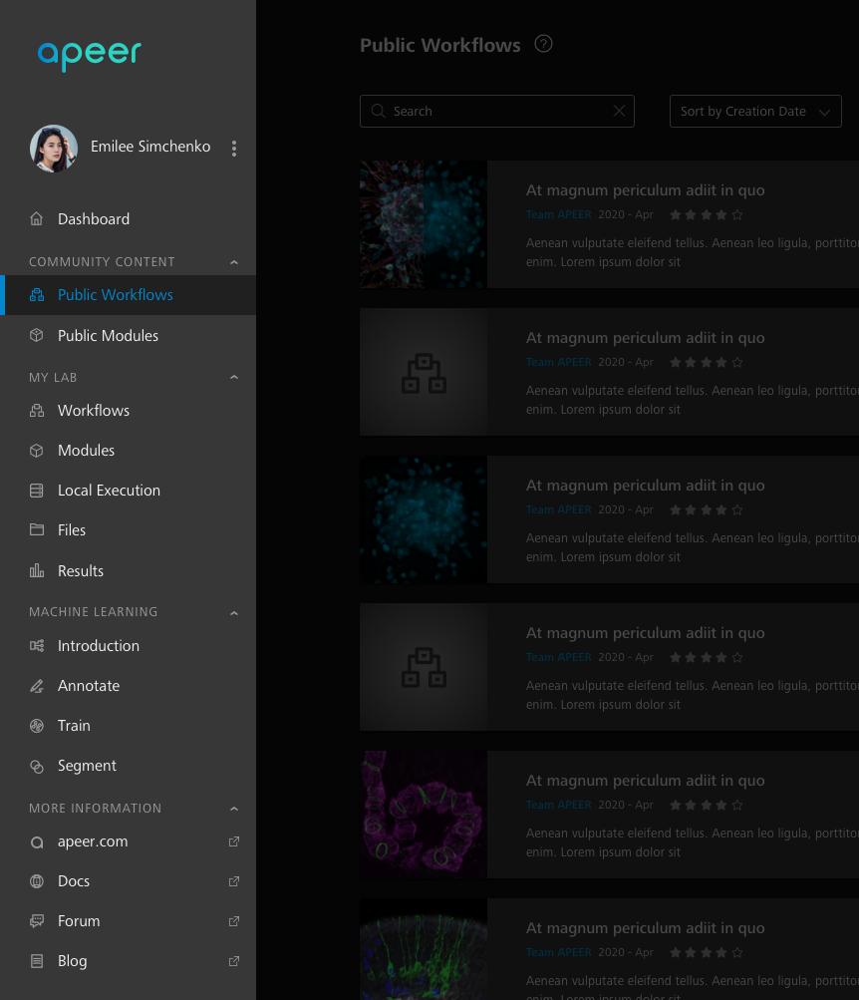
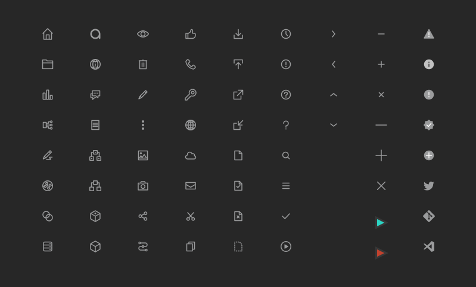

Case 1. Redesign of the NavMenu
Problems
The navigation menu must be one of the most frequently used component in a digital product.
As I joined Apeer, the previous design presented the following problems:
- Too many similiar grey colors. Difficult to focus.
- No overview for all items.
- Navigation hierarchy not intuitive.
- Symbols not consistent with different sizes and stroke thickness.
- Visual design not appealing.
BEFORE

My Approach
- Research about the platform to better understand the functionalities and the needs of the users
- user interviews, research from former designers, actively using the platform as a user - Analysis of the previous design
- summerise the pain points - Sketching
- define structure, functionalities and hierarchy - Design iteration
- gather feedbacks from the team - Visual design
- keep the design consistency, improve the visual quality
FIDELITY EVOLUTION OF THE NAVMENU REDESIGN


Final Structure
/A separate dashboard/
In the long run our users will have customised content.
/Tabs organised in groups/
A clear hierarchy brings better experience.
/The new Machine Learning Feature/
The menu is easily expandable.
/External links for more info/
According to service desk our users need quick access to more info.
FINAL DESIGN
Visual Improvement
New Icons
Defined size and stroke thickness.
Set up icon buttons.

Defined Colours
Gave specific name for each colour.
Typography
Case 2. Design a Set of New Icons
I redesigned all the icons from the current Apeer platform. Now they look like one family. I documented them in the sketch library and uploaded on Zeplin to align with the developers.
BEFORE
AFTER
